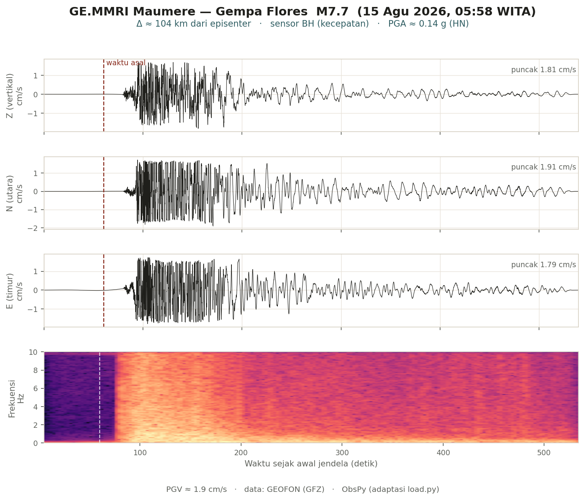

Beranda / Kuliah Umum / Gempa Flores 2026
Diskusi Publik · PSBA UGM
Respons Tanggap Darurat Gempa Flores (NTT) 2026
Sudut pandang seismologi atas gempa Mw 7,7 Flores — dari peta seismisitas Indonesia hingga rekaman guncangan di Maumere — dan apa peran geofisika di 72 jam pertama tanggap darurat.
Presentasi
Jelajahi slide langsung di sini (gunakan panah atau klik), atau buka layar penuh.
Di dalam presentasi: ←/→ atau klik untuk navigasi, F layar penuh, P cetak PDF.
Gambar utama
Dua ilustrasi inti dari presentasi.


Ringkasan
- Indonesia adalah rumah gempa. 217.801 gempa dalam 26 tahun; NTT berada di sabuk aktif busur Sunda–Banda.
- Sumbernya sesar naik busur-belakang Flores — sesar yang sama dengan seri gempa Lombok 2018 dan tsunami Flores 1992.
- Terekam jauh sebelum seismograf: katalog Arthur Wichmann mencatat gempa, gempa laut, dan tsunami di Flores–NTT sejak 1600-an (Solor 1648, laut utara Flores 1837, Ende 1868). Sejarah sudah memperingatkan; 2026 menegaskannya.
- Peran seismologi di 72 jam pertama: lokasi & magnitudo cepat, ShakeMap, keputusan peringatan tsunami, dan prakiraan gempa susulan.
- Untuk tsunami dekat-pantai, guncangan kuat itu sendiri adalah peringatan — segera evakuasi mandiri ke tempat tinggi.
- Indonesia timur butuh lebih banyak mata: jaringan sensor biaya rendah & berbasis komunitas untuk merapatkan pemantauan.
Data & sumber
Parameter gempa. USGS Mw 7,7 (GFZ Mw 7,61), 15 Agu 2026 05:58 WITA, kedalaman 10 km, episenter 8,31°S 121,35°E, mekanisme sesar naik. Dampak dan gempa susulan dari BMKG.
Waveform. Stasiun GEOFON GE.MMRI (broadband + akselerometer), diambil via layanan FDSN GEOFON dan diproses dengan ObsPy.
Catatan: angka dampak masih berkembang mengikuti pemutakhiran BMKG. Materi ini disiapkan untuk keperluan diskusi publik dan edukasi.